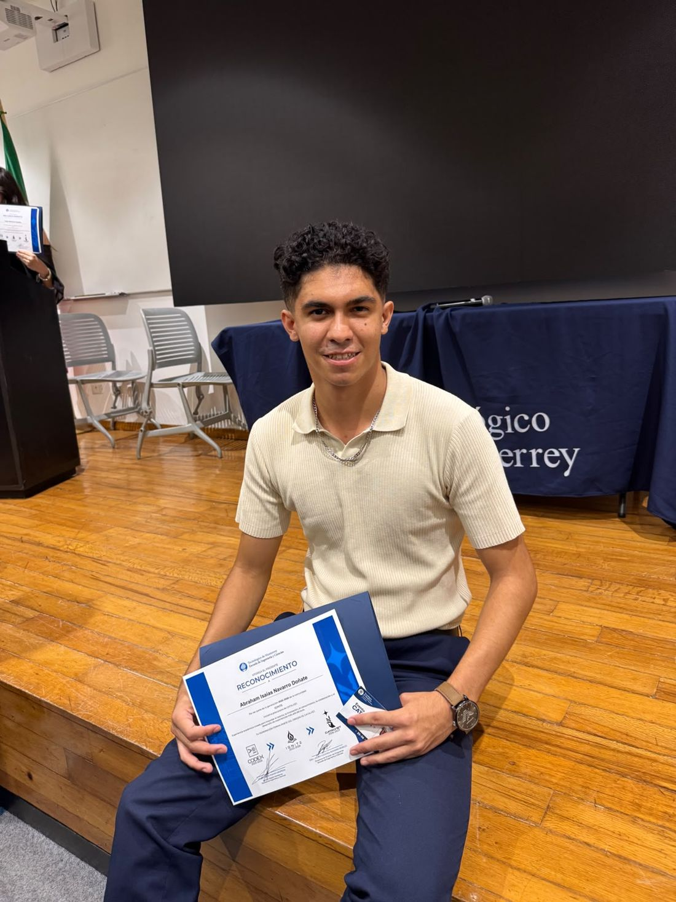

Abraham Isaías Navarro Doñate, fundador de Cultivatec, completó el programa de alto rendimiento Ignite de la Escuela de Ingeniería y Ciencias del Tec de Monterrey y recibió su diploma.
Una formación que fortalece su trabajo al frente de Cultivatec y la meta de acercar la tecnología y la robótica a más niñas y niños.
